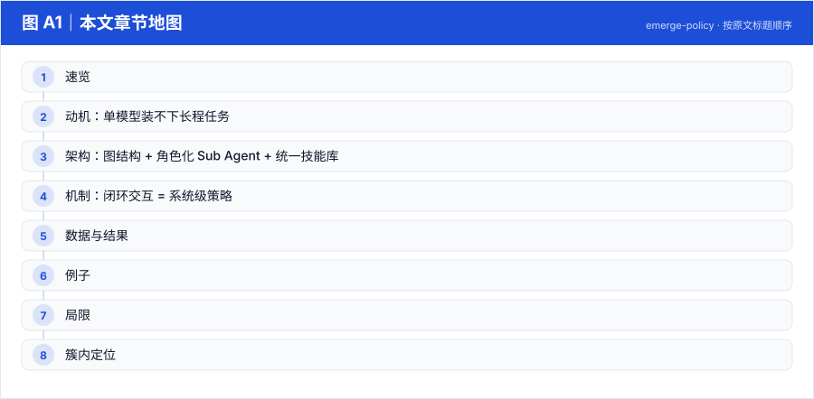
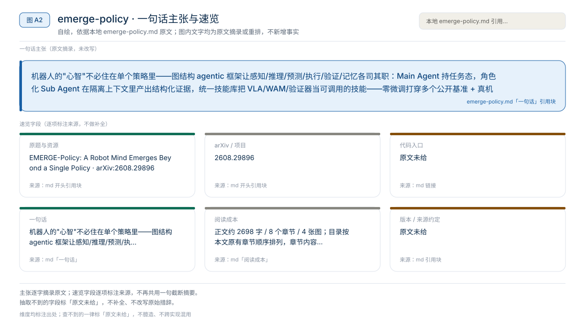

【Harness VLA · 代码即策略与技能发现】RAX 深读：把在线探索做成 Scaling Law，五大基准平均领先 37.4 个点
冻结通用 coding agent 直接连机器人感知/控制接口，把"在线探索"做成 scaling law：成功决策编译成程序、版本化入库，能力随探索预算单调增长
Harness01-代码即策略与技能发现2026
机器人的"心智"不必住在单个策略里——图结构 agentic 框架让感知/推理/预测/执行/验证/记忆各司其职：Main Agent 持任务态，角色化 Sub Agent 在隔离上下文里产出结构化证据，统一技能库把 VLA/WAM/验证器当可调用的技能——零微调打穿多个公开基准 + 真机
原题与资源：EMERGE-Policy: A Robot Mind Emerges Beyond a Single Policy · arXiv:2608.29896
一句话：机器人的"心智"不必住在单个策略里——图结构 agentic 框架让感知/推理/预测/执行/验证/记忆各司其职：Main Agent 持任务态，角色化 Sub Agent 在隔离上下文里产出结构化证据，统一技能库把 VLA/WAM/验证器当可调用的技能——零微调打穿多个公开基准 + 真机
阅读成本：正文约 2698 字 / 8 个章节 / 4 张图；目录按本文原有章节顺序排列，章节内容未改动。
目录（点击跳到对应章节）：

图 A1：本文章节地图（节点即原文 h2 标题）。自绘，依据本文，不新增事实。
| 项 | 内容 |
|---|---|
| 一句话 | 机器人的"心智"不必住在单个策略里——图结构 agentic 框架让感知/推理/预测/执行/验证/记忆各司其职：Main Agent 持任务态，角色化 Sub Agent 在隔离上下文里产出结构化证据，统一技能库把 VLA/WAM/验证器当可调用的技能——零微调打穿多个公开基准 + 真机 |
| 冻结 | 全部异构后端（VLA、WAM、仿真模型等皆作为技能被调用） |
| 演化 | 无参数更新；系统级策略在闭环交互中"涌现" |
| 命名 | EMERGE = 系统级智能从多组件协同中涌现 |

图 A2：一句话主张与速览字段。自绘，依据本文，不新增事实。
图 A3：本文可核验的数字摘录。自绘，依据本文，不新增事实。
一个具体任务走一遍 · 本文可核验数字与字段速查（以下均摘自原文，未作推算）：
| 组件 | 职责 |
|---|---|
| Main Agent | 在活跃上下文窗口内保持任务级状态：计划状态、恢复状态、相关记忆、近期证据、技能签名 |
| Sub Agents（角色隔离上下文） | 感知 / 执行监控 / 验证 / 记忆固化——各自隔离上下文，只返回结构化、任务相关的证据（控制 Main Agent 的信息负载） |
| Unified Skill Library | 三类功能技能：Operational（VLA、运动原语…策略库）、Imagination（WM 预测 rollout、模型仿真）、Evaluation（评估进度/完成度、目标判据、失败分析） |
| Branch Stack 恢复 | 局部化纠错：判据校验 → 文本失败诊断 → 从栈中回退重规划 |
| token-aware 外部记忆 | 保留任务相关状态，防上下文爆炸 |
任务指令 → Main Agent 层级任务规划（生成 Subgoal 1..n）
→ 委派：Operational Skill 执行 / Imagination Skill 预演 / Evaluation Skill 判据检查
← Sub Agents 返回结构化证据 → Main Agent 更新状态
→ 失败：判据驱动的验证 + 文本诊断 + Branch Stack 局部恢复（不全局重来）
→ 终止 / 重规划| 方法 | Goal | Spatial | Object | Long | Average |
|---|---|---|---|---|---|
| OpenVLA | 79.2 | 84.7 | 88.4 | 53.7 | 76.5 |
| π0-FAST | 88.6 | 96.4 | 96.8 | 60.2 | 85.5 |
| π0 | 95.8 | 96.8 | 98.8 | 85.2 | 94.2 |
| OpenVLA-OFT | 97.9 | 97.6 | 98.4 | 94.5 | 97.1 |
| π0.5 | 98.0 | 98.8 | 98.2 | 92.4 | 96.8 |
| Fast-WAM | 97.0 | 98.2 | 100 | 95.2 | 97.6 |
| StarVLA-α | 98.6 | 98.7 | 99.7 | 94.2 | 97.8 |
| Cosmos Policy | 98.2 | 98.1 | 100 | 97.6 | 98.5 |
| HarnessVLA | 94.0 | 97.0 | 100 | 93.0 | 96.0 |
EMERGE-Policy 完整版（w/ WM）在消融表中报 99.2（四个套件 99.0–100）。RoboDojo 五维（Generalization/Memory/Precision/Long-Horizon/Open）平均 19.98 分 / 11.20%（Memory 维 25.00/22.51% 为最优列）。
| 配置 | State | Language | Sensor | Camera | Average |
|---|---|---|---|---|---|
| EMERGE-Policy | 95.0 | 98.0 | 94.0 | 85.0 | 93.9 |
| w/o Eval（去掉评估 agent） | 81.6 (-13.4) | 87.1 (-10.9) | 82.6 (-11.4) | 81.2 (-3.8) | 85.6 (-8.3) |
| w/o Sub（去掉子任务 agent） | 89.8 | … | … | … | （论文表内逐列见原文） |
w/ WM vs w/o WM（标准 LIBERO avg）： 99.2 vs 98.8——世界模型分支贡献 +0.4，评估/子任务 agent 贡献更大（-8.3 时）。
叠放任务中：Verification Sub-Agent 用判据"红块完全位于蓝垫内且无倾斜"检查执行证据；不满足时诊断文本指出"释放过早"，Branch Stack 回退到"重新抓取"子目标而不是重跑整个任务；Imagination Skill 先用 WAM 预演"从左侧接近"的后果，预演失败则直接换策略，省一次真实执行。
本文判断：命名：EMERGE = 系统级智能从多组件协同中涌现
局限与不确定项（以下均摘自本文，未作推断）：
图 A4：局限与不确定项摘录。自绘，依据本文，不新增事实。
覆盖范围：本页新增的导读、目录、章节地图、数字卡与局限清单，均为原文信息的重排或摘录；正文、数据与实验结论未改动。